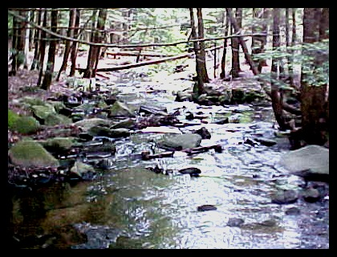
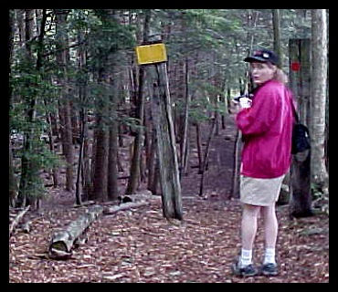
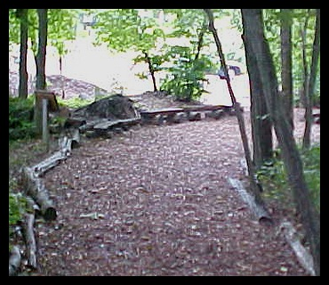
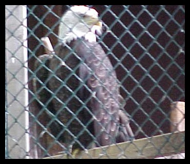
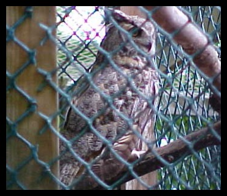

| ~~~ SITE HABITAT PHOTOS ~~~ |

Roaring Brook Nature Center
Canton, CT
Habitat: What a diverse place as far as habitat goes. The Sanctuary is endowed with a Conifer forest, brooks and streams, marked trails, hardwood forest, an open field area with
birdhouses, and a nice little pond. Roaring Brook is unique in that it also houses disabled and injured birds like Eagles, Owls, and Hawks. Please use the map link on the links page to find Gracey Ave in Canton.
Location: Gracey Avenue, off Route 44, Canton.
More Habitat Pictures
Weather

More Habitat Pictures




Weather
link will open in a new window.
To return to this page, just close that window

|


| Except as noted, site content and photographs copyright � 2002 Dave Pelletier aka Wing Watchers, all rights reserved. The habitat pictures on this page are copyright � 2002 Jodie Diskavich, with one exception (noted in ALT tag). Used with the permission of the photographer. |

Banners
|Bird Photos
|Bird Sightings
|Birding Sites
|Birding Tips
|Nature Tales
Email
|Fledglings
|Guestbook |Home
|Link Exchange
|Links
|Nature Photos
Crawly Things |Awards and Webrings
|
|